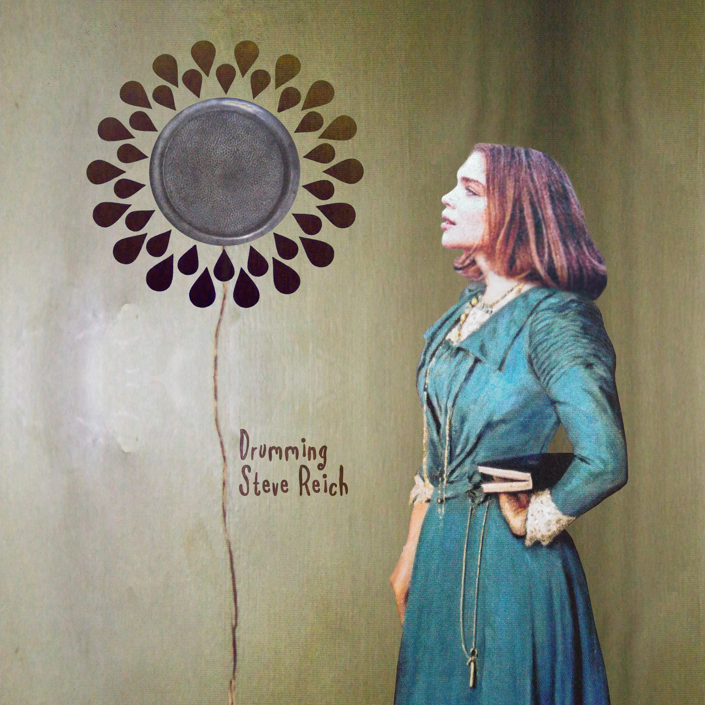

Record design 2
"Drumming"

The first in a series of images aimed at exploring the University of Ulster campus in Belfast from both a macro and micro perspective.
I decided to run with the concept of digitally mixing paint by taking two photographs of paint trays and overlaying them in photoshop. I wanted to overuse the digital effects in order to create a high-energy, surreal feel.
I was partially inspired by the solarised effect used in the music video for "Ashes to Ashes" by David Bowie as I felt this dramatic effect was successful in heightening the surreal nature of an already very unusual video.